- Armatex
- Press fittings
- Bend 45° i/i GP5041
Besco · Gutpress Copper, V profile · water
Bend 45° i/i, copper press, V profile GP5041
Bend 45° i/i from the Gutpress Copper, V profile · water line: 8 sizes from 12 × 12 to 54 × 54 mm. Application: water, heating, industry. Standard EN 1254-7.
- Sizes
- 8
- Pressure
- 16 bar
- Temperature
- −10…110 °C

Sizes and article numbers
Source: Besco 2026 catalogue| Size | Article number | Bag | Box | Quantity to quote |
|---|---|---|---|---|
| 12 × 12 | GP5041-12 | 10 pcs | 250 pcs | |
| 15 × 15 | GP5041-15 | 10 pcs | 120 pcs | |
| 18 × 18 | GP5041-18 | 10 pcs | 100 pcs | |
| 22 × 22 | GP5041-22 | 10 pcs | 60 pcs | |
| 28 × 28 | GP5041-28 | 5 pcs | 40 pcs | |
| 35 × 35 | GP5041-35 | 4 pcs | 20 pcs | |
| 42 × 42 | GP5041-42 | 2 pcs | 12 pcs | |
| 54 × 54 | GP5041-54 | 2 pcs | 8 pcs |
- Line
- Gutpress Copper, V profile · water
- Application
- water, heating, industry
- Standard
- EN 1254-7
- Approvals
- DVGW KIWA WRAS RISE PZH
- Catalogue name
- Bend 45° i/i
Request a quote: Bend 45° i/i GP5041.
Add sizes to the list with the “Add” button or write to us straight away. We will prepare wholesale prices, availability and lead times within one working day.
Other products in the line
Search the Gutpress Copper V · water line Bend 90° i/a GP5001 · 8 sizes
Bend 90° i/a GP5001 · 8 sizes Bend 90° i/i GP5002 · 8 sizes
Bend 90° i/i GP5002 · 8 sizes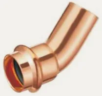
Bend 45° i/a GP5040 · 8 sizes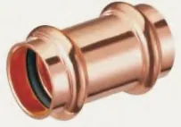
Coupling GP5270 · 8 sizes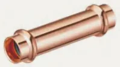
Slip coupling GP5270S · 8 sizes Equal tee GP5130 · 8 sizesReducing tee GP5130 · 41 sizes
Equal tee GP5130 · 8 sizesReducing tee GP5130 · 41 sizes Reducing coupling i/i GP5240 · 15 sizes
Reducing coupling i/i GP5240 · 15 sizes Fitting reducer i/a GP5243 · 19 sizes
Fitting reducer i/a GP5243 · 19 sizes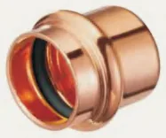
Cap end GP5301 · 8 sizes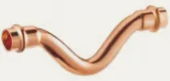
Crossover i/i GP5085 · 4 sizes Crossover i/a GP5086 · 4 sizes
Crossover i/a GP5086 · 4 sizes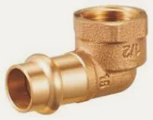
Elbow 90° female GP4090 · 11 sizes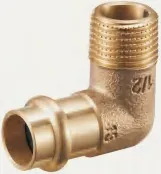
Elbow 90° male GP4092 · 10 sizesFemale tee GP4130 · 9 sizes Male adaptor GP4243 · 14 sizes
Male adaptor GP4243 · 14 sizes Female adaptor GP4270 · 15 sizes
Female adaptor GP4270 · 15 sizes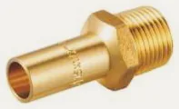
Male adaptor GP4280 · 6 sizes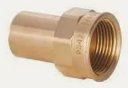
Female adaptor GP4281 · 7 sizes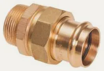
Male union (flat seal) GP4331 · 8 sizes Union press × press (flat seal) GP4330 · 5 sizes
Union press × press (flat seal) GP4330 · 5 sizes Male union (flat seal) GP4330G · 8 sizes
Male union (flat seal) GP4330G · 8 sizes Female tap connector GP4355 · 7 sizes
Female tap connector GP4355 · 7 sizes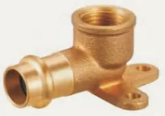
Female wallplate elbow GP4471 · 3 sizes Cranked mounting unit, female GP4976 · 1 size
Cranked mounting unit, female GP4976 · 1 size Straight mounting unit, female GP4977 · 2 sizes
Straight mounting unit, female GP4977 · 2 sizes Copper tube BT · 4 sizes
Copper tube BT · 4 sizes